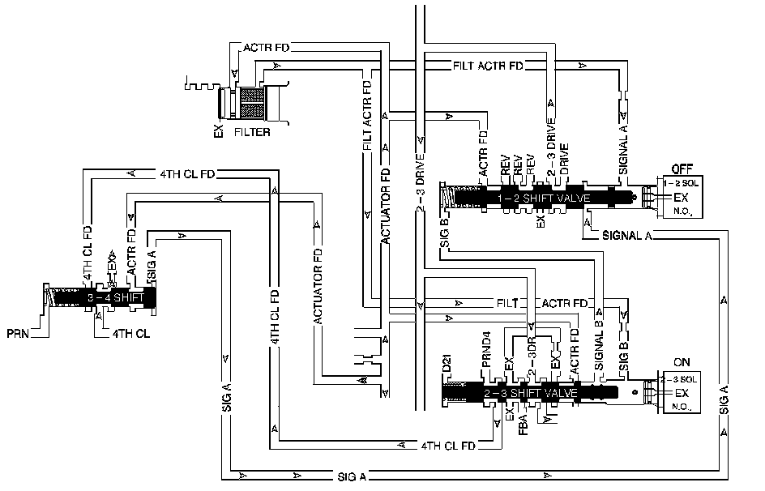

4L80-E / 4L85-E Automatic Transmission
DTC P0751

Circuit Description
The 1-2 shift solenoid (SS) valve controls the fluid flow action on the 1-2 and the 3-4 shift valves. The 1-2 SS valve is a normally open exhaust valve that is used with the 2-3 SS in order to allow four different shifting combinations.
When the transmission control module (TCM) detects a 2-2-3-3 gear ratio, then DTC P0751 sets. DTC P0751 is a type B DTC.
DTC Descriptor
This diagnostic procedure supports the following DTC:
DTC P0751 1-2 Shift Solenoid Valve Performance - No First or Fourth Gear
Conditions for Running the DTC
^ No AT ISS DTCs P0716 or P0717.
^ No OSS DTCs P0722 or P0723.
^ No TCC Stuck ON DTC P0742.
^ No Transmission Component Slipping DTC P0894.
^ No shift solenoid electrical DTCs P0973, P0974, P0976 or P0977.
^ The system voltage is 8-18 volts.
^ The engine run time is greater than 6 seconds.
^ The transmission OSS is 150 RPM or greater.
^ The transmission ISS is between 150 RPM and 6500 RPM.
^ Calc. throttle position is 8 percent or greater.
^ The engine torque is greater than 50 N.m (37 lb ft).
^ The transmission fluid temperature (TFT) is between 20° C and 130° C (68° F and 266° F).
Conditions for Setting the DTC
The following conditions both occur twice in one trip:
Condition 1
The TCM commands 1st gear and the gear ratio indicates 2nd gear, 1.44:1 to 1.50:1 for 2 seconds or greater.
Condition 2
The TCM commands 4th gear, and the gear ratio indicates 3rd gear, 0.98:1 to 1.03:1, and the TCC Duty Cycle is 55 percent or greater for 4 seconds or greater.
Action Taken When the DTC Sets
^ The TCM requests the engine control module (ECM) to illuminate the malfunction indicator lamp (MIL) during the second consecutive trip in which the Conditions for Setting the DTC are met.
^ The TCM commands maximum line pressure.
^ The TCM freezes transmission adaptive functions.
^ The ECM records the operating conditions when the Conditions for Setting the DTC are met. The ECM stores this information as Freeze Frame and Failure Records.
^ The TCM stores the DTC P0751 in TCM history during the second consecutive trip in which the Conditions for Setting the DTC are met.
^ The TCM records the operating conditions when the Conditions for Setting the DTC are met. The TCM stores this information as Failure Records.
Conditions for Clearing the MIL/DTC
^ The ECM turns OFF the MIL during the third consecutive trip in which the TCM does not send a MIL illumination request.
^ A scan tool can clear the MIL/DTC.
^ The TCM clears the DTC from TCM history if the vehicle completes 40 warm-up cycles without an emission related diagnostic fault occurring.
^ The TCM cancels the DTC default actions when the fault no longer exists and the ignition switch is OFF long enough in order to power down the TCM.
Diagnostic Aids
^ Verify that the transmission meets the specifications in the Shift Speed table. Refer to Shift Speed.
^ Other internal transmission failures can cause more than one shift to occur.
^ DTC P0751 defaults to an elevated line pressure condition which may result in partial TCC apply. This may produce an idle surge that could stall the engine.
Test Description
The number below refers to the step number on the diagnostic table.
2. This step tests that the TCM commanded all shifts, that all shift solenoid valves responded correctly, but that all the shifts did not occur.